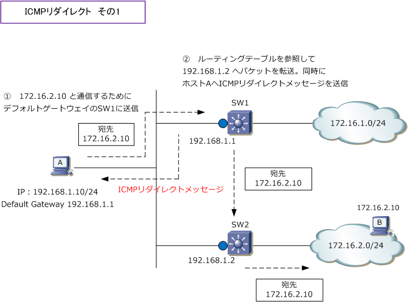
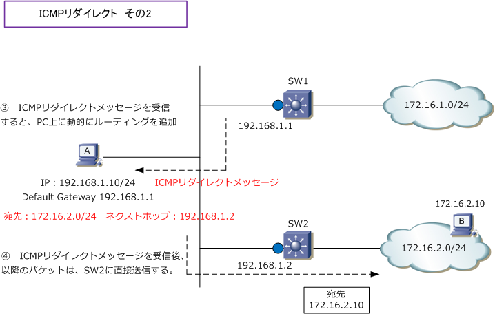

ICMP Redirect
ICMPリダイレクトとは
ICMPリダイレクトとは、L3デバイスがパケットの送信元ホストに、特定の宛先ネットワークに対する適切な ゲートウェイを通知する機能のことです。送信元ホストに通知されるこの ICMPリダイレクトメッセージ は、 L3デバイスがパケットを受信したインターフェースと、パケットを送信するインターフェースが同じになると 送信元ホストに通知されて、送信元ホストは自身のルーティングテーブルに一時的な経路情報を登録します。
下図はホストA（192.168.1.10）がホストB（172.16.2.10）にパケットを送信するフロー。先ずホストAの デフォルトゲートウェイがSW1なのでホストAはSW1にパケットを送信します。次に、SW1のルーティング テーブルで「172.16.2.0/24」の宛先経路に対するネクストホップが「192.168.1.2」である場合、SW1は パケットをSW2に転送するのと同時に、送信元ホストAに対してICMPリダイレクトメッセージを送信します。

ICMPリダイレクトメッセージには「172.16.2.0/24宛てのパケットは、SW2に送信して下さい」という リダイレクト情報が含まれています。このメッセージを受信したホストAは、PC上の自身のルーティング テーブルに一時的なリダイレクトルートを追加します。この経路はWindowsの場合は10分間保持されます。 以降は「172.16.2.0/24」宛てのパケットはSW1ではなく、SW2に効率よく直接送信するようになります。

Windowsファイアウォールが有効でICMPをブロックしている場合、ICMPリダイレクトメッセージを受信 できないので、そのPCにおいてはこのような動作は行いません。
HSRPを有効化しているL3デバイスのインターフェースで、ICMPリダイレクトが有効化されている場合、 冗長構成が適切に活かされない状況が発生する可能性があり、Cisco機器ではHSRPが有効化された場合、 そのインターフェースでICMPリダイレクトが自動的に無効化されます ⇒ (config-if)# no ip redirect